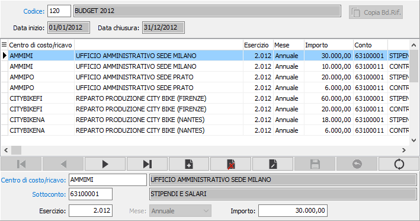
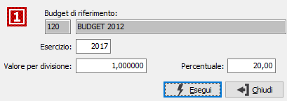

Valori budget
I valori del budget vengono utilizzati come termine di confronto, in fase di bilancio analitico, con i dati derivanti dalla contabilità analitica.

I valori devono essere inseriti per singolo codice budget; deve essere specificato il centro di costo/ricavo; l'eventuale sottoconto, se il budget lo prevede; l'esercizio, viene proposto il corrente; il mese, eccetto se il budget è annuale ed infine l'importo relativo.

Nel caso in cui il budget in oggetto abbia un budget di riferimento e non contenga nessun valore è attivo il pulsante Budget di riferimento. La pressione del pulsante determina l'apertura della finestra di generazione dati da budget di riferimento, che mostra il budget di riferimento, richiede l'esercizio, un eventuale valore di divisione ed una percentuale da applicare ai valori del budget di riferimento per generare i nuovi valori. La pressione del pulsante 'Esegui' determina la copia dei valori nel nuovo budget.